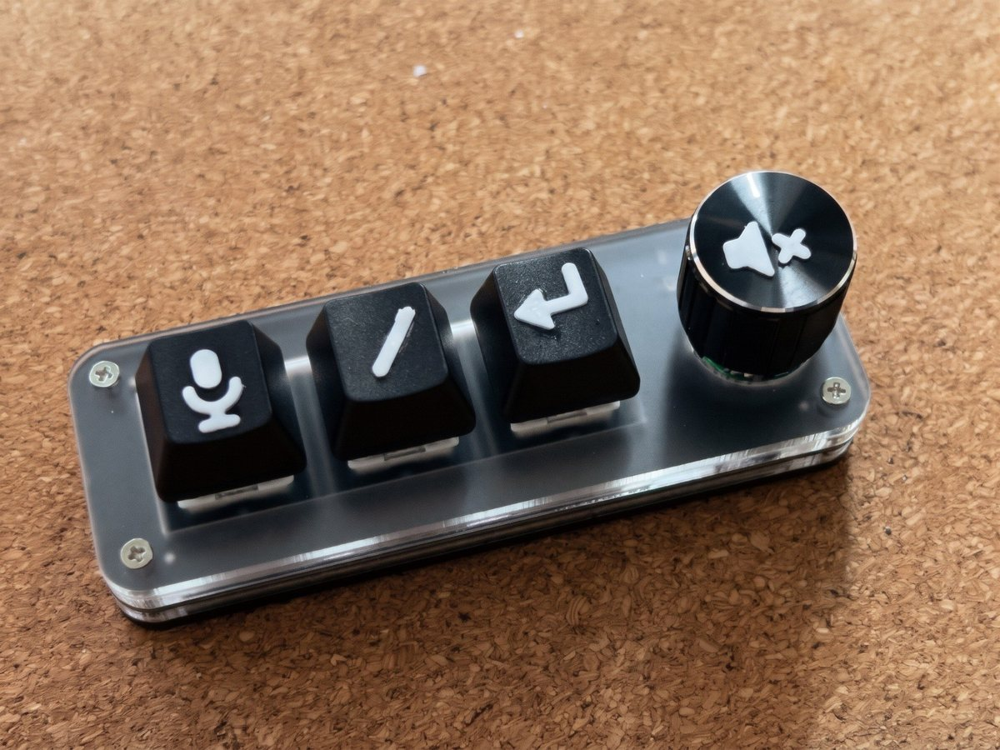

Your agentis done.Look up.
voiceloop reads Claude Code's replies aloud on your Windows PC, even when Claude Code runs on another machine. Questions and approvals get their own chimes. The rest of the time, it's quiet.

How it works
Three small parts. Run them all on one Windows PC, or spread them over three machines: Claude Code on a server, the speakers at your desk, and the voice on whatever box has a spare CPU.
-
Wherever Claude Code runs
The hook
A small Python script. When Claude finishes a reply, asks a question or wants your approval, it sends the text to your PC.
voiceloop_hook.py -
Your Windows PC
The app
Plays the speech, shows the pill and chimes. Only the thread you last typed into speaks, and it stays quiet while the PC is locked.
fix the login bugvoiceloop.exe -
Any box with Docker
The voice
Kokoro turns the text into speech. A CPU is enough, and it can run on the same PC.
Kokoro-FastAPI
Hear each kind
Each one travels the same way. Speech starts about 1.3 seconds after a reply lands, even when the reply is long.
Without leaving the keyboard
/mute- Silence the thread you typed it in.
/unmutebrings it back. /resend- Hear the last reply again.
- Ctrl+Alt+V
- Turn voice mode on or off.
- Ctrl+Alt+X
- Stop speech now.
- Win+L
- Lock the PC and it says nothing until you're back.
The pad
Three keys and a knob, set up from voiceloop's Settings. No vendor software, no driver to install and no admin rights. The key map lives on the pad, so it works on any PC afterwards.
- 1DictateCtrl+Space, for Handy or any dictation app
- 2Slash commandStarts dictation and types /
- 3SendEnter
- 4Turn the knobVolume down and up
- 5Press the knobStop speech
As an Amazon Associate I earn from qualifying purchases.
The same pad sells under many names. If that listing has gone, search for a 3-key macropad with a knob and check its USB ID is 1189:8890.
Print the key symbols
Pick an icon for each key and export an STL of flat symbols to glue on. Starter icons are included. They printed cleanly at 9 mm with two 0.2 mm layers of PLA.
A different pad?
Each pad model is described by an XML profile: its USB IDs, keys, knobs and lights. A pad that speaks the same CH57x protocol only needs a new profile. Make one, or ask for yours on GitHub.
Compared with VoiceMode
VoiceMode is the best-known voice add-on for Claude Code. It holds a two-way spoken conversation over MCP, with speech-to-text built in. If you work on one machine and want to talk with Claude, try it first.
VoiceMode suits you if
- Claude Code runs on the computer in front of you.
- You want to talk with Claude as well as hear it. VoiceMode listens and speaks.
voiceloop suits you if
- Claude Code runs somewhere else. The agent can sit on a server while the sound plays at your desk. VoiceMode plays audio where Claude Code runs.
- You work on Windows. It's a native app with a tray icon, the on-screen pill, a choice of output device and silence while the PC is locked.
- You run several agents. Mute a thread, hear only the one you last typed into, or let every thread take its turn.
- You'd like a pad on the desk. Dictate, send and stop speech with one hand, all set up from voiceloop.
voiceloop only speaks. It doesn't listen, so it leaves dictation to Handy or a tool like it.
Security
The hook sends reply text to your PC over plain HTTP, with a token. That suits a home network or a tailnet, and not the open internet. Here's what listens, and where the token lives.
:8765The app- Takes replies from the hook, and every request needs the token. Keep it on a LAN or a tailnet. Install with
-HookFromand the firewall only lets your Claude Code machine in. tokenThe key- Anyone who has it can make your PC speak and mute threads. It's in
config.jsonin the install folder, and inhook.json(mode 0600) on the Claude Code machine. 127.0.0.1:8766Settings- Listens on this PC only. Each run makes a random key that the page needs, and the server checks the Host header.
voiceloop_hook.pyThe hook- Reads T3 Code's database read-only, to find thread names. It sends nothing anywhere except the address you paired it with.
:8880Kokoro- Has no authentication, so keep it off the internet too.
Install it
Three steps. You need Docker somewhere for the voice, a Windows 10 or 11 PC for the app, and Python 3.8 or later wherever Claude Code runs.
-
Start the voice
Run Kokoro-FastAPI in Docker, on the Windows PC or any box it can reach. A CPU is enough. Any other server with an OpenAI-style
/v1/audio/speechendpoint will do instead. The Kokoro guide has the details.cd kokoro docker compose up -d -
Install the app
Unzip the release, right-click
install.ps1and choose Run with PowerShell. Settings opens. Enter the speech server's address, press Test connection and pick a voice. To let only your Claude Code machine through the firewall, run it from an administrator PowerShell with-HookFrom..\install.ps1 -HookFrom 192.168.1.20 -
Pair the hook
In Settings, About, pick the address your Claude Code machine can reach and press Copy command. Run it next to
voiceloop_hook.pyon that machine. It adds four hooks to Claude Code and plays a test phrase on your PC.python3 voiceloop_hook.py setup \ --url http://192.168.1.50:8765 \ --token 3f9c…
SmartScreen may warn you
The exe isn't code-signed, so Windows may say it "protected your PC". Choose More info, then Run anyway. Each release lists the exe's SHA256, so you can check the download first. To remove voiceloop, run install.ps1 -Uninstall, and voiceloop_hook.py remove on the Claude Code machine.